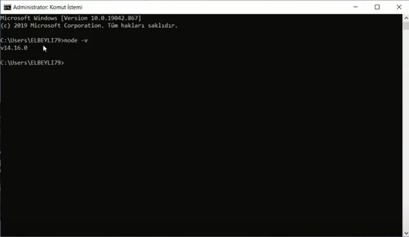

Chat Uygulamam Node.js ve Socket.io kullanılarak yapılmış, tarayıcımızdan 2 farklı localhost:3000 sekmesi açtıktan sonra anlık olarak chat yapılabilmesini sağlıyor.
Projeme Github üzerinden aşşağıya bırakmış olduğum linkten ulaşabilirsiniz.
PROJENİN DOĞRU ÇALIŞMASI İÇİN AŞŞAĞIYA BIRAKTIĞIM LİNKTEKİ node_modules KLASÖRÜNÜN PROJE DOSYALARINA EKLENMESİ GEREKMEKTEDİR AKSİ TAKTİRDE UYGULAMA ÇALIŞMAYACAKTIR (KLASÖR GİTHUB'A YÜKLENMEYECEK KADAR BÜYÜK OLDUĞUNDAN MECBUR BÖYLE BİR YÖNTEM BULMAK ZORUNDA KALDIM)
Öncelikle tarayıcımızdan nodejs.org adresine gidip en son sürümü yüklemeliyiz.Basit bir kurulumun ardından node.js otomatik olarak bilgisayarınıza yüklenecektir. Kontrol etmek için cmd yi açıp node -v kodunu yazabilirsiniz.

Kurulumdan sonra Projemizi çalıştırmak için Terminale npm start yazıyoruz.Daha sonra tarayıcımızda 2 tane farklı sekme açıp ikisininde link kısmına http://localhost:3000 yazıp iki ayrı sekme elde ediyoruz.
Bu işlemden sonra artık anlık olarak iki farklı sekmeden konuşma gerçekleştirebiliriz.